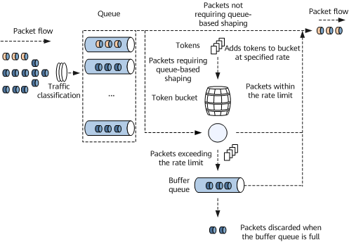

Traffic Shaping
Traffic shaping adjusts the rate of outgoing traffic to reduce traffic bursts so that outgoing packets can be transmitted at a stable rate. Traffic shaping uses a buffer and token buckets to control the traffic rate. When packets are sent at a high rate, the system buffers packets and then sends them evenly under the control of the token buckets.
Figure 1 shows an example of traffic shaping, using flow-based queue shaping in single-rate-single-bucket mode.
Figure 1 Traffic shaping
The process of traffic shaping is as follows:
- When packets arrive, the system classifies packets and places them into different queues.
- If a queue is not configured with traffic shaping, packets placed in this queue are immediately sent. For the queues configured with traffic shaping, the system proceeds to the next step.
- The system places tokens in the bucket at the specified rate (CIR):
- If there are sufficient tokens in the bucket, the system sends the packets and decreases the number of tokens accordingly.
- If tokens in the bucket are insufficient for packet forwarding, the system places the packets into the buffer queue. If the buffer queue is full, the system discards the packets.
- When there are packets in the buffer queue, the system compares the number of packets with the number of tokens in the token bucket. If there are sufficient tokens, the system forwards packets until all the packets in the buffer queue are sent.